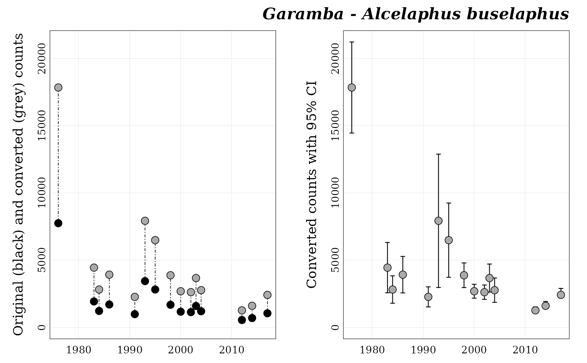

This function plots a panel of two graphics for one count series
(previously generated by format_data()):
on the left side, scatter plot overlapping original (black points) and converted counts (grey points);
on the right side, scatter plot of converted counts with boundaries of the 95% confident interval.
plot_series(series, title = TRUE, path = ".", path_fig = ".", save = FALSE)a character string. The count series names (can be
retrieved by running list_series()).
a logical. If TRUE (default) a title (series name) is
added.
a character string. The directory in which count series have
been saved by the function format_data().
a character string. The directory where to save the plot
(if save = TRUE). This directory must exist and can be an absolute or a
relative path.
a logical. If TRUE (default is FALSE) the plot is saved in
path_fig.
No return value.
## Load Garamba raw dataset ----
file_path <- system.file("extdata", "garamba_survey.csv",
package = "popbayes")
garamba <- read.csv(file = file_path)
## Create temporary folder ----
temp_path <- tempdir()
## Format dataset ----
garamba_formatted <- popbayes::format_data(garamba, path = temp_path)
#> ✔ Conversion data found in 'data'.
#> ✔ Detecting 10 count series
## Get series names ----
popbayes::list_series(path = temp_path)
#> [1] "garamba__alcelaphus_buselaphus" "garamba__giraffa_camelopardalis"
#> [3] "garamba__hippotragus_equinus" "garamba__kobus_ellipsiprymnus"
#> [5] "garamba__kobus_kob" "garamba__loxodonta_africana"
#> [7] "garamba__ourebia_ourebi" "garamba__redunca_redunca"
#> [9] "garamba__syncerus_caffer" "garamba__tragelaphus_scriptus"
## Plot for Alcelaphus buselaphus at Garamba ----
popbayes::plot_series("garamba__alcelaphus_buselaphus", path = temp_path)
